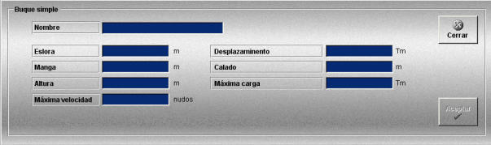

Buques Simples
La creación y edición de plataformas de buque simple se realiza mediante la siguiente ventana.

Esta ventana permite definir plataformas de tipo simple que podrán ser añadidas a las unidades participantes en los Ejercicios.
Para este tipo de plataformas se definen los siguientes datos:
Nombre: Nombre de la plataforma.
Formato: caracteres alfanuméricos.
Eslora: Eslora del buque.
Unidades: metros
Rango: 1.0 – 500.0
Manga: Manga del buque.
Unidades: metros
Rango: 1.0 – 50.0
Altura: Altura del buque.
Unidades: metros
Rango: 0.0 – 100.0
Máxima velocidad: Velocidad máxima que puede alcanzar el buque.
Unidades: nudos
Rango: 0.0 – 100.0
Desplazamiento: Desplazamiento del buque.
Unidades: toneladas
Rango: 0.0 – 50000.0
Calado: Calado del buque.
Unidades: metros
Rango: 0.0 – 20.0
Máxima Carga: Máxima carga que puede transportar el buque.
Unidades: toneladas
Rango: 0.0 – 50000.0